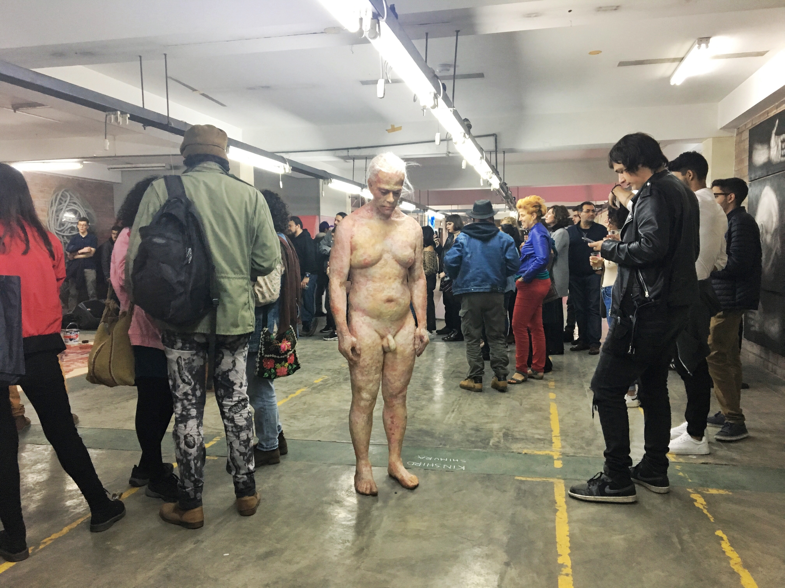
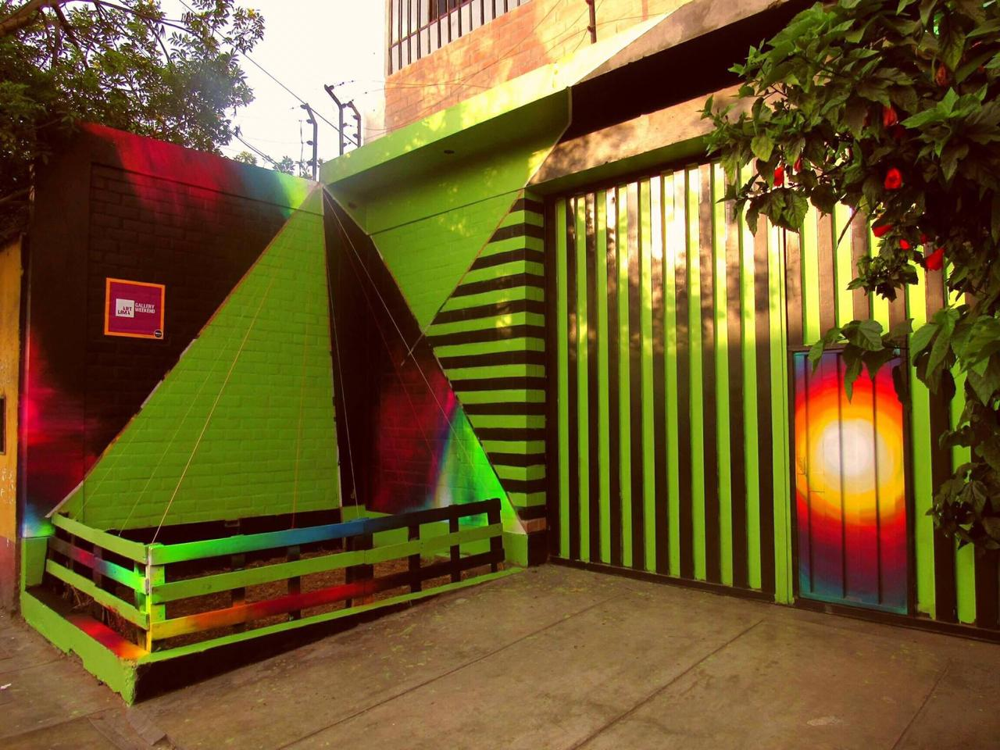

En conjunto crearon una galería donde las barreras establecidas por las grandes instituciones del arte se rompen, donde las relaciones son horizontales y el arte, en vez de intimidar, invita a acercarse, disfrutarlo y conocerlo.
El local, que previamente albergó una fábrica textil, se configura ahora como un nuevo punto de encuentro para las nuevas generaciones interesadas en el arte, donde pueden conocer y a la vez, dialogar sobre los temas que los afecten y representen.
Como espacio cultural, brindamos una experiencia mucho más allá de las inauguraciones convencionales, ya que junto con Bar Efímero, realizamos el cierre de nuestros eventos acompañándonos de bandas invitadas y performances inéditos.
El proyecto se ve potenciado por un trabajo autogestionado que busca potenciar la producción del arte joven y pretende así generar un mayor diálogo entre los diversos pilares del arte, descentralizando su mercado y concepto de producción.

